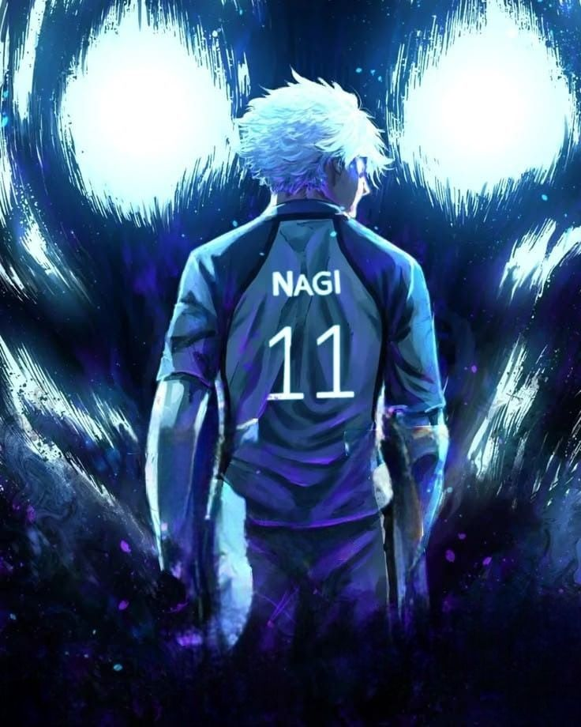
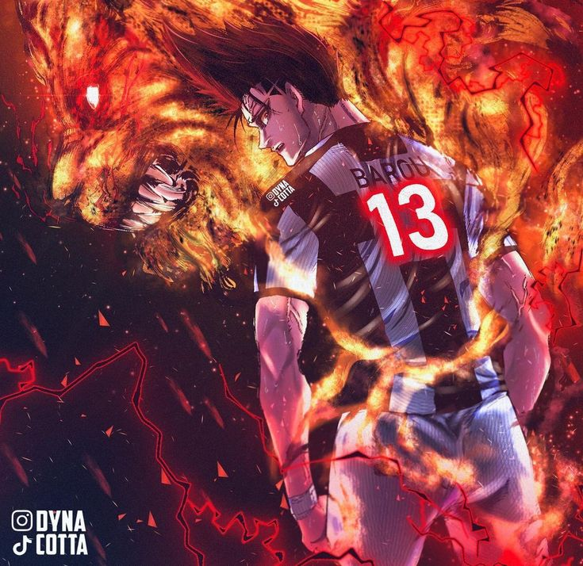
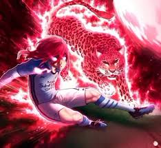

Seishiro Nagi,The Fallen Genius is a specialized Striker with a world class, genius level trapping and aerial control, designed to turn difficult passes into instant goals. His stats reflect elite close range technique, high acceleration, and explosive shooting ability. He excels when playing in the air or immediately after trapping the ball.


Shouei Barou The Predator is a premier striker, characterized by his high powered, accurate long range shooting, immense physical strength, and selfish villain playstyle. He excels at breaking defenses via dribbling charging and shooting from roughly 27 to 29 meters, often commanding an S rank in offense and shooting in the Neo Egoist League

 Hyoma Chigiri The Red Panther is a premier speed based, that is 99 or higher , next with his high level dribbling from around 93 to 94, and refined shooting 91 or higher in the Neo Egoist League. He utilizes a 50 miles sprint which is around 5.77s to break defenses, specializing in cutting from the left to score from his golden formula zone.
Hyoma Chigiri The Red Panther is a premier speed based, that is 99 or higher , next with his high level dribbling from around 93 to 94, and refined shooting 91 or higher in the Neo Egoist League. He utilizes a 50 miles sprint which is around 5.77s to break defenses, specializing in cutting from the left to score from his golden formula zone.